Contents
How Soodo works
Google, ChatGPT, Perplexity and other assistants recommend products they can read and trust. Soodo checks each of your products the way those systems see them, then gives you a short list of fixes, most important first.
Scanning and checking never change your store. Soodo writes only product descriptions and search listings, and only after you approve the exact wording. Every previous version is saved and can be restored.
The workflow
- 1Scan catalogImports products, variants, categories and store policies. Read-only.
- 2Check live pagesOpens each published product page and robots.txt, the way a crawler does.
- 3Fix issuesWork through the fix plan. Most fixes are made in Shopify; missing specifications are added through Soodo.
- 4Review and publishApprove the proposed description. Soodo publishes it and checks the result.
Overview
The Overview answers two questions: how ready are my products, and what should I do next? It opens in a simple view; switch to Detailed for charts.
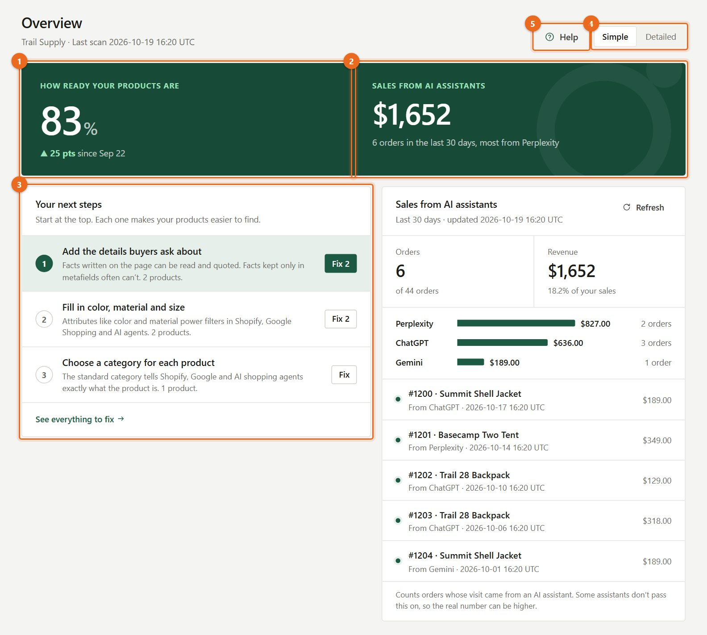
- 1How ready your products areOne score from 0 to 100, and how much it changed in the last 30 days.
- 2Sales from AI assistantsRevenue from orders that started in ChatGPT, Perplexity, Gemini and others in the last 30 days.
- 3Your next stepsThe three most useful things to do now, in plain words. Start at the top; each button takes you there or starts the job.
- 4Simple or DetailedDetailed adds the charts, area scores and full lists. Soodo remembers your choice.
- 5HelpOpens this guide for the screen you’re on. You can also press ?.
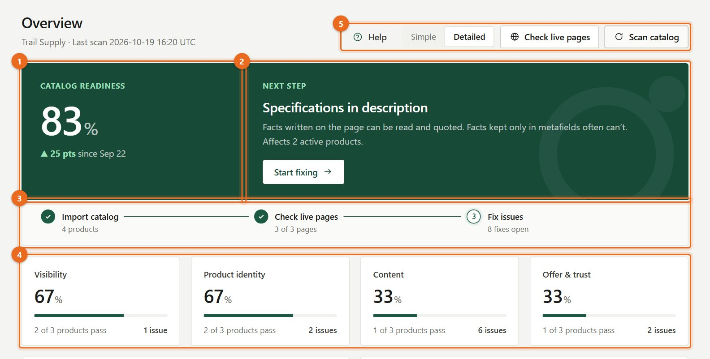
- 1Catalog readinessThe average score of your active products, and how much it changed in the last 30 days. 100 means every check that could run has passed.
- 2Next stepThe single most useful thing to do now. Press the button; Soodo takes you there or starts the job.
- 3Setup progressImport catalog, check live pages, fix issues. A tick means the step is done.
- 4Readiness by areaShare of products that pass each area. “Run live checks to measure” means that area waits on step 2. Click a tile to see its fixes.
- 5Scan catalogRun a new scan after you change products in Shopify.
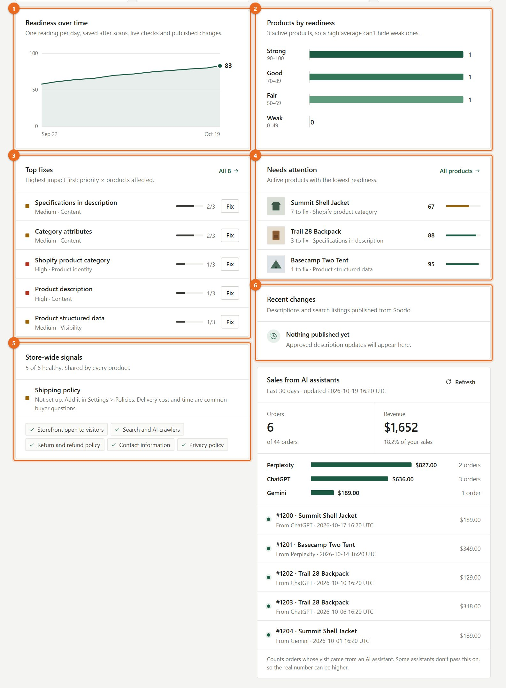
- 1Readiness over timeOne reading per day, saved after scans, live checks and published changes.
- 2Products by readinessHow many products are Strong, Good, Fair or Weak, so a good average can’t hide weak products.
- 3Top fixesThe five fixes with the most impact. “2/3” means two of your three active products are affected.
- 4Needs attentionProducts with the lowest score. Click one to open it.
- 5Store-wide signalsPolicies, contact details and crawler access that apply to every product.
- 6Recent changesThe latest descriptions and search listings you published or restored.
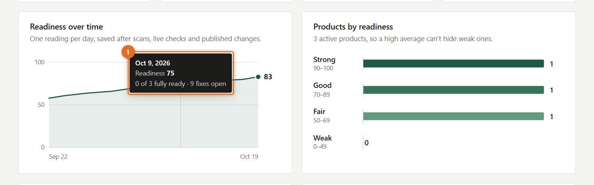
- 1Daily detailThe date, the readiness score, how many products were fully ready and how many fixes were open that day.
Sales from AI assistants
The clearest sign your work is paying off: orders from shoppers who found you through an AI assistant.
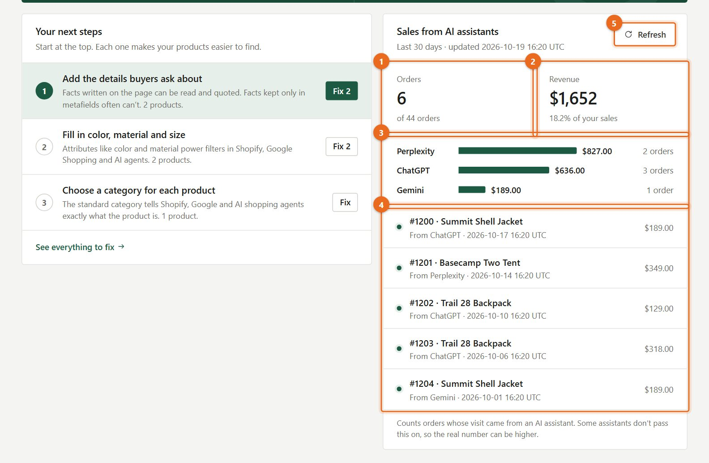
- 1OrdersOrders in the last 30 days whose visit came from an AI assistant, out of all your orders.
- 2RevenueWhat those orders were worth, and their share of all your sales.
- 3By assistantWhich assistants sent the most revenue.
- 4Recent ordersThe latest AI-referred orders and the product page they landed on.
- 5RefreshUpdates the figures. Soodo also refreshes them automatically when you open the Overview.
Scan and live checks
Both jobs run in small batches with a progress bar, so large catalogs never time out. You can pause and continue later; finished work is kept.
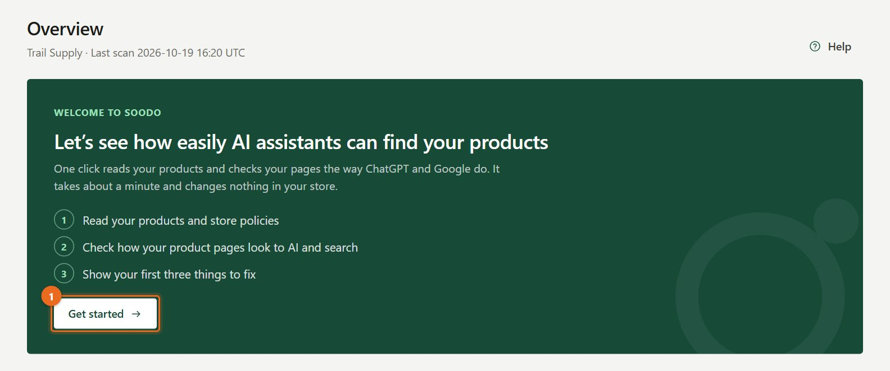
- 1Get startedImports your products, then checks your pages, in one click. It changes nothing in your store.
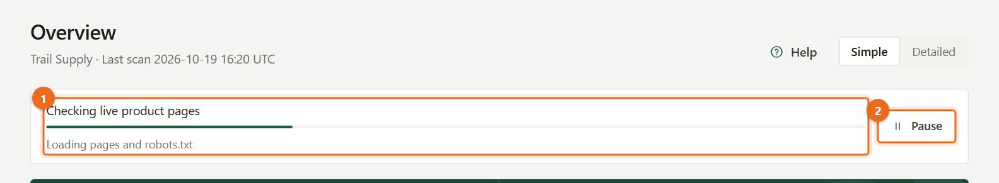
- 1ProgressWhat is running and how much is left.
- 2PauseStops after the current batch. Press Continue scan or Check live pages to carry on.
Products
Every product with its score, its next fix and its live page status. Click anywhere on a row to open the product.
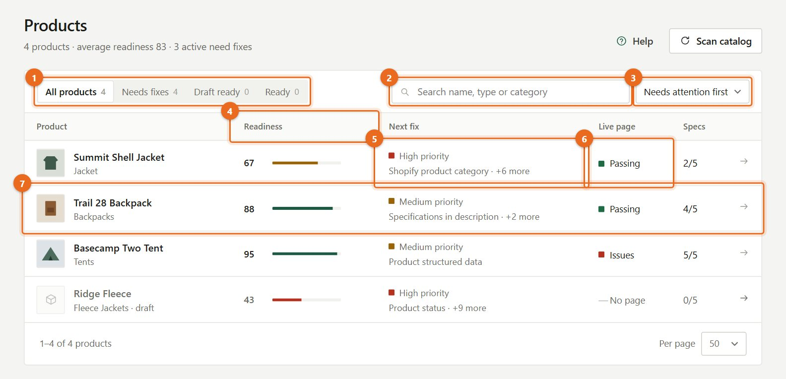
- 1FiltersAll, Needs fixes, Draft ready and Ready, with counts.
- 2SearchBy product name, type or category.
- 3SortNeeds attention first is the default. You can also click a column header.
- 4ReadinessThe product’s score out of 100. Red under 50, amber under 80, green from 80.
- 5Next fixThe most important open fix, with its priority and how many more there are.
- 6Live pagePassing, Issues, Not checked, or No page if the product isn’t on the Online Store.
- 7Open a productThe whole row is clickable.
A product’s checks
Each product has three tabs: Checks, Specifications and Live page. Checks lists what to fix, grouped by area, with the most important one already open.
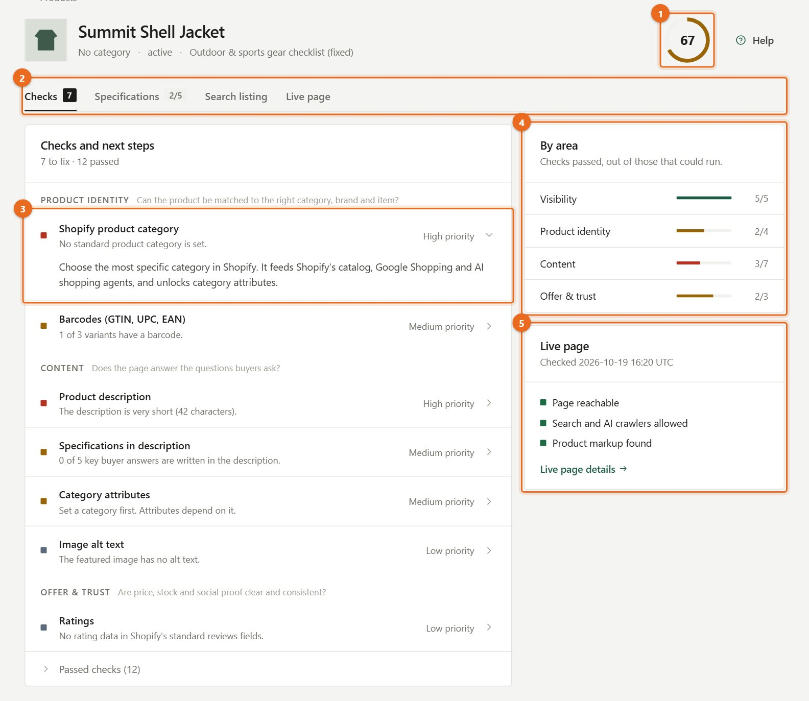
- 1Product readinessThis product’s score out of 100.
- 2TabsThe number on Checks is how many fixes are open. Specifications shows how many key facts were found.
- 3A checkThe problem in one line. Click it to see what to do and the button that takes you there. One check is open at a time.
- 4By areaHow many checks passed in each area.
- 5Live page summaryThe result of the last live check, with a link to the details.
Adding specifications
Assistants answer buyers’ questions from what is written on the page. Soodo finds the key facts for each type of product and helps you write the missing ones into the description.
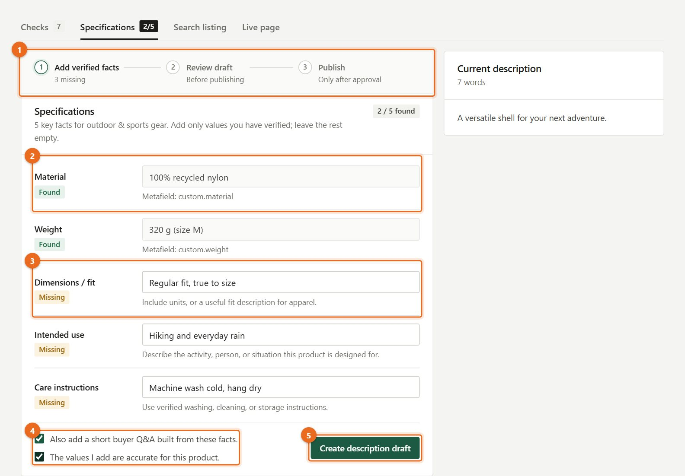
- 1Where you areAdd verified facts, review the draft, publish.
- 2FoundAlready known from your product data. The source is shown underneath. These fields are locked; change them in Shopify.
- 3MissingType the value only if you have verified it. Leave anything you don’t know empty.
- 4OptionsAdd a short buyer Q&A built from these facts (on by default), and tick to confirm the values are accurate.
- 5Create description draftMakes a draft. Nothing changes in your store yet.
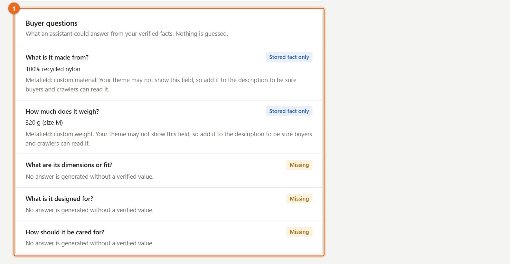
- 1Buyer questionsWhat an assistant could answer from your facts. “Stored fact only” means the fact exists in Shopify but may not show on the page, so add it to the description. Soodo never guesses an answer.
Search listing
The title and short description people see on Google, and that AI answers often quote. Soodo suggests one from your product data; you edit and approve it.
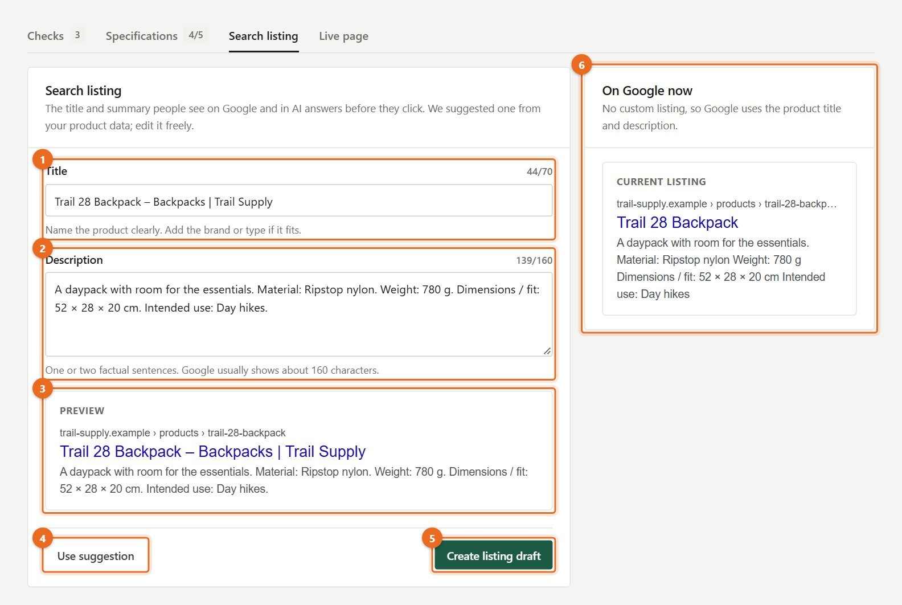
- 1TitleUp to 70 characters, so Google doesn’t cut it off. The counter turns red if it’s too long.
- 2DescriptionOne or two factual sentences. Google usually shows about 160 characters.
- 3PreviewHow the listing will look in search results, updated as you type.
- 4Use suggestionPuts back the suggestion built from your product’s title, brand, category, description and verified facts.
- 5Create listing draftMakes a draft to review. Nothing changes in your store yet.
- 6On Google nowYour current listing. Without a custom listing, Google uses the product title and description.
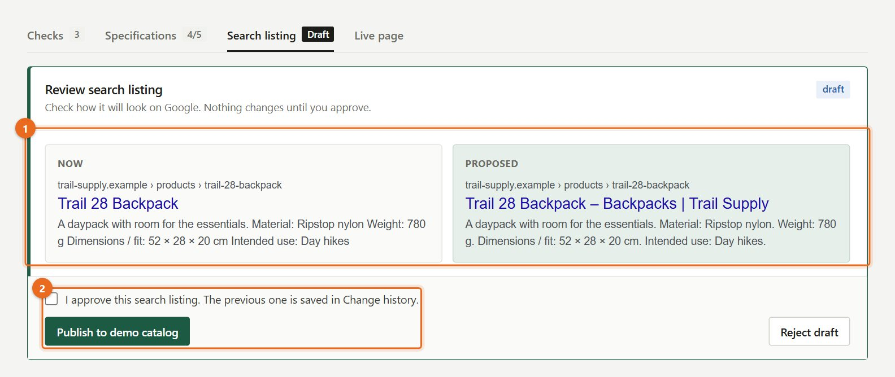
- 1Now and proposedSide by side, as they would appear on Google.
- 2Approve and publishTick to approve, then publish. Soodo checks the result, and Change history keeps the previous listing so you can restore it.
Review and publish
You always see the exact wording before anything is published. Soodo keeps your existing text and adds one clear specifications list at the end.
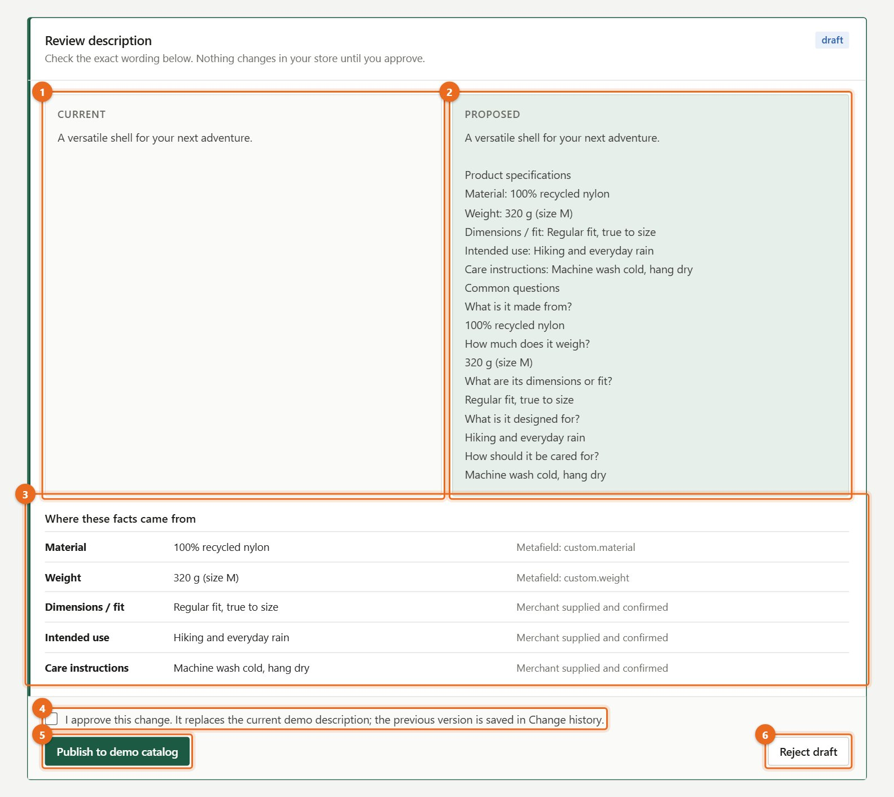
- 1CurrentThe description in your store today.
- 2ProposedYour text, plus the specifications list.
- 3SourcesWhere each value came from: your product data, or you.
- 4ApproveRequired before publishing.
- 5PublishSoodo re-reads the product, publishes, then reads it back to confirm the change landed.
- 6Reject draftDiscards the draft. Your product is not changed.
Live page
What search engines and AI assistants actually see when they open the product page.
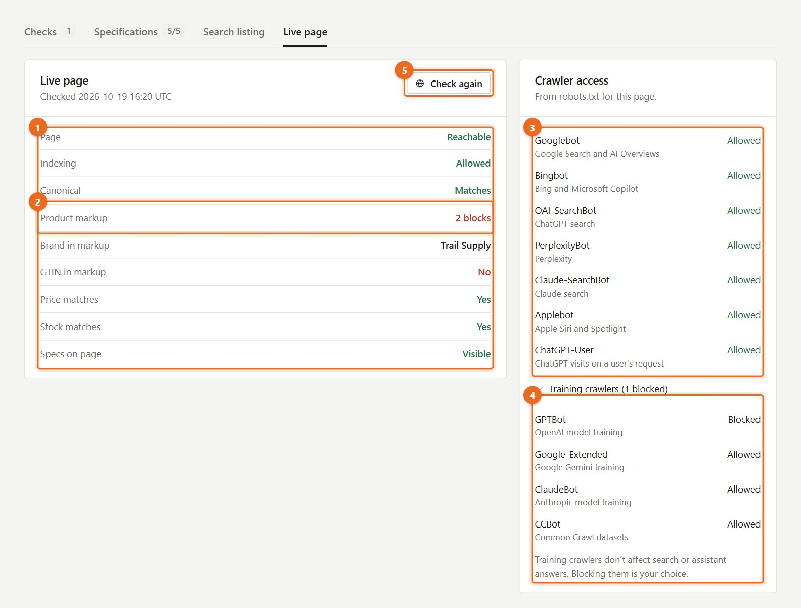
- 1Page resultsIs the page reachable and indexable, and does its product data match Shopify?
- 2A problem foundHere the page has two product markup blocks, usually left by an old app or theme edit. Search engines may ignore conflicting markup.
- 3Search and assistant crawlersAllowed or blocked by your robots.txt. These should be allowed.
- 4Training crawlersUsed to train AI models. Blocking them is your choice and doesn’t affect search results.
- 5Check againRe-runs the check after you fix something.
Fix plan
Every open fix across your active products, ranked by impact. Fix the same issue on several products in one pass.
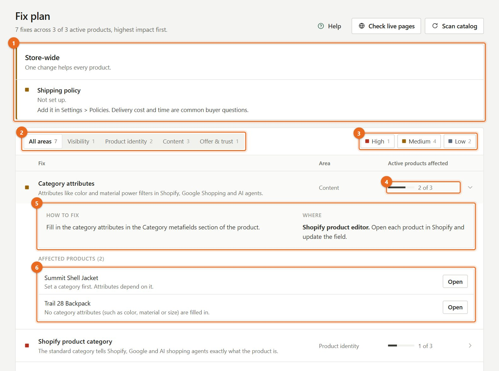
- 1Store-wideOne change in Shopify settings helps every product.
- 2Area filterShow fixes for one area only.
- 3Priority filterClick High, Medium or Low; click again to clear.
- 4ImpactHow many active products the fix affects.
- 5How and whereWhat to do, and whether it’s done in Soodo, the Shopify product editor or your theme.
- 6Affected productsOpen takes you to the right tab of that product.
Change history
Every description Soodo published, with the version it replaced.
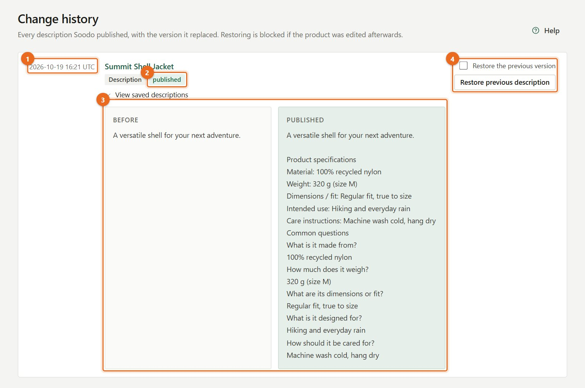
- 1WhenDate and time of the change (UTC).
- 2StatusPublished, restored, or a state that needs checking.
- 3Saved descriptionsThe version before and the version published, side by side.
- 4RestoreTick and press Restore to put the previous description back. Restore is blocked if the product was edited afterwards, so newer work is never lost.
Settings and permissions
Choose which specification checklist applies, and see which Shopify permissions Soodo has.
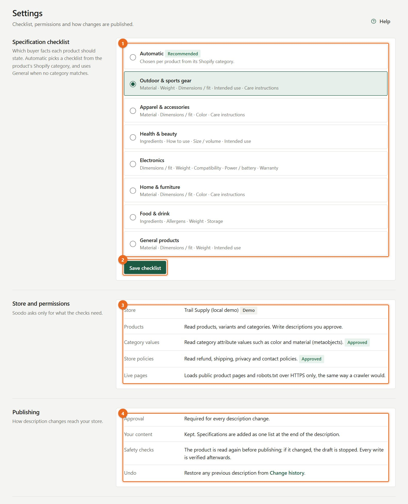
- 1Specification checklistAutomatic picks the right facts for each product from its Shopify category. Choose a fixed list if your whole catalog is one type.
- 2Save checklistApplies immediately to every product.
- 3PermissionsWhat Soodo can read and write. A permission marked “Not approved yet” means some checks show as not checked until you approve it.
- 4Publishing rulesApproval is always required, your text is kept, and every change can be undone.
Troubleshooting
Publishing shows an error
Before publishing, Soodo re-reads the product from Shopify to make sure nothing changed. If Shopify refuses that read, the publish stops and nothing is changed.
The most common cause is a permission that hasn’t been approved yet. Open Soodo from your Shopify admin and accept the permission request, then try again. Settings shows whether each permission is approved.
If it still fails, send a screenshot of the error message itself to your Soodo contact.
“Shopify did not return a public Online Store URL”
The product isn’t available on the Online Store sales channel, so it has no public page. Search engines and assistants can’t see it, and Soodo can’t live-check it. If the product should be for sale, open it in Shopify and make it available on the Online Store channel.
Some checks say “Not checked yet”
They depend on a step that hasn’t run. Visibility checks need a live check; category, barcode and price checks need a scan from the current version. Run Scan catalog, then Check live pages.
The scan stopped part way (“Partly imported”)
Press Continue scan; finished batches are kept. If it stops with an error, read the message. A permission message means you need to approve the updated permissions first.
An area tile shows “—”
No product has had all of that area’s checks run yet. Soodo won’t claim a pass it hasn’t measured. The note under the tile says which step to run.
History says “Stopped: product changed”
The description in Shopify changed while Soodo was publishing. Your current content was kept. Review the product and create a fresh draft.
Does a score of 100 guarantee I’ll appear in AI answers?
No. Readiness measures what Soodo can verify: that pages are reachable, data is complete and consistent, and facts are written clearly. Those make products easier to find and recommend, but no tool can guarantee a ranking.
Sales from AI assistants shows “Approve order access”
Soodo needs permission to read orders to see where they came from. Open Soodo from your Shopify admin and approve the order permission. Soodo reads only the order number, amount and the website the visit came from, never customer details.
Why are AI sales lower than I expected?
Some assistants open links without saying where the visit came from, so those orders look like direct visits. The figure shows orders Soodo can confirm, so the real number can be higher.
Glossary
- Readiness
- A score from 0 to 100. High-priority checks count three times, medium twice, low once. Checks that couldn’t run are left out.
- Active product
- A product with status Active in Shopify. Draft and archived products are left out of the fix plan.
- Shopify product category
- The standard category from Shopify’s product taxonomy, such as Apparel › Coats. Different from the free-text product type.
- Category attributes
- Fields like color, fabric or size that belong to a category. Filled in on the product in Shopify.
- GTIN / barcode
- The manufacturer’s barcode number (UPC, EAN). Lets search engines match the exact item.
- Structured data
- Hidden product markup in the page that machines read for price, stock and identifiers. Your theme usually adds it.
- robots.txt
- A file on your store that tells crawlers which pages they may read. Edited in your theme as robots.txt.liquid.
- Crawler
- A program that reads web pages for a search engine or assistant, such as Googlebot or OAI-SearchBot for ChatGPT search.
- noindex
- A tag asking search engines not to list the page.
- Canonical link
- Tells search engines which address is the main one for a page.
- Metafield
- An extra field stored on a product in Shopify. Your theme may or may not show it.
- Draft
- A proposed description waiting for your approval. Nothing changes until you publish it.